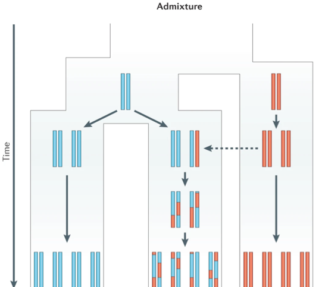
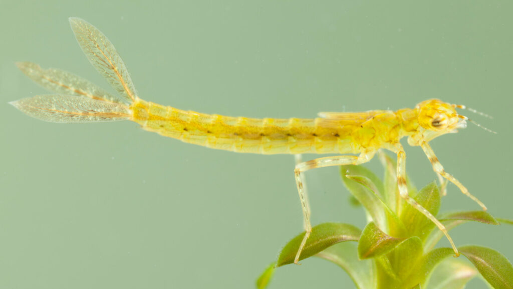

I mainly do research along the following topics and questions:
How do populations evolve through the process of range expansion?
What are the factors that lead to heterogeneity in genomic divergence between hybridizing species?
To what extent is introgression aiding thermal adaptation in range expanding species?
How does the interplay between evolution and phenotypic plasticity shape responses to global warming?
